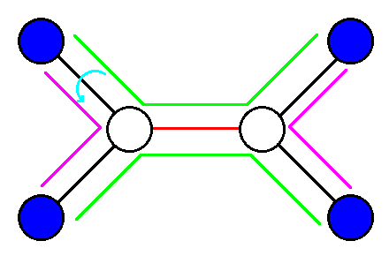

有一棵大小为 $n$ 的树，第一个节点是网络科学，第二个节点是博弈论，……
Lyra 的暑期计划是一个每个元素在 $[1, n]$ 的序列，她计划完成一个长度为偶数的子区间的节点，并且咕咕咕掉剩下的。
她会给区间内的节点两两配对，两个节点如果很接近，那么她就只需要把第一个节点要交的作业稍作修改，在网络学堂上上传到第二个节点。
Lyra 很聪明，所以她总是能巧妙的把区间内的节点两两匹配使得匹配的节点之间在树上的距离之和 (唯一简单路上的边权和)最小。每个长度为偶数的区间的完成时间定义为最小配对方法中每对匹配点间距离的总和。
作为 Lyra 的朋友，你要帮她求序列每个长度为偶数的区间的节点的完成时间之和。
第一行包含两个正整数 $n, m$ ($1 \leq n, m \leq 10^5$) 表示树的大小和序列的长度。
接下来 $n-1$ 行，每行三个正整数 $u, v, w$ ($1 \leq u, v \leq n; u \neq v; 1 \leq w \leq 10^9$)，表示一条连接 $u, v$ 长度为 $w$ 的树边。
接下来一行包含 $m$ 个整数表示序列。
输出一行一个整数，表示答案。由于答案可能很大，输出其对 $998244353$ 取模的结果。
先考虑给定一个集合 $S$ ($2 \mid |S|$)，求 $S$ 中元素如何匹配才能使总权值最小。
我们枚举每条边，考虑它们 (它们在最小权匹配中) 的贡献。对于一条边 $e = (u, v)$，(由于它是桥边) 它将原树分为两个部分 $T_1, T_2$。考虑 $S \cap T_1$ 和 $S \cap T_2$，它们大小的奇偶性相同。
如果 $\left| S \cap T_1 \right|, \left| S \cap T_2 \right|$ 都是奇数，则 $e$ 必然属于某条匹配经过的边集 (若不然，两侧的点都自己匹配，那么奇数个点是无法完成匹配的)，也就是说 $e$ 的贡献至少是 $1$。
那 $e$ 的贡献能否大于 $1$ 呢？如果大于 $1$，则至少是 $3$ 次 (为什么？请读者思考)，那么我们任选其中两个边集包含 $e$ 的匹配。不难发现，它们是相交的。因此，我们可以改变这 $4$ 个点的连接 (匹配) 方式，使得总权值减小。如下图所示：将绿色匹配改成粉色匹配后，权值变小。
若 $\left| S \cap T_1 \right|, \left| S \cap T_2 \right|$ 都是偶数，则最小权匹配不应该包含边 $e$。
反之，则 $e$ 的贡献至少是 $2$。类似地，像刚才的方法一样，选取两个边集包含 $e$ 的匹配，改变它们的连接方式，使得总权值变小。
因此，我们对一个固定的集合，已经明确如何算最小权匹配的值了，接下来是原题的计算。
注意到，对于每条边 $e = (u, v)$，它将原树分成的两个部分中，其中有一个就是原树的一棵子树。
因此我们需要对每一棵子树，知道在原序列中，有多少个长度为偶数的子区间，其中有奇数个元素 (节点) 在该子树中。
我们用线段树记录原序列中，每个元素 (节点) 是否在该子树内 ($0/1$)，dfs 结束后，子树的合并就相当于一个线段树合并。
接下来考虑如何用线段树维护答案。
我们要对每个线段树节点 (区间) 维护如下几个信息：
考虑线段树节点的合并，设左子树为 $x$ (它管辖的区间为 $x.l \sim x.r$)，右子树为 $y$ (区间为 $y.l \sim y.r$)：
首先是 $v$。没什么好说的，直接相加：$v = x.v + y.v$。
其次是 $ans$。首先要将两个子树的 $ans$ 相加，然后加上跨越两个子树的答案。
跨越两个子树的答案一定是左边为后缀、右边为前缀，且长度为偶数，标记为 $1$ 的节点数为奇数，因此有
$$ ans = x.ans + y.ans + \sum_{i, j \in \{0, 1\}} x.r_{i, j} \cdot y.l_{i, 1 - j} $$
然后是 $l_{i, j}$。首先要加上 $x.l_{i, j}$，然后考虑跨越两个子树的。由于是前缀，我们需要统计出左子树的大小 ($w = x.r - x.l + 1$)，以及标记为 $1$ 的节点数 ($x.v$)，然后有
$$ l_{i, j} = x.l_{i, j} + y.l_{(i + w) \bmod 2, (j + x.v) \bmod 2} $$
$r_{i, j}$ 完全类似，这里就不说了。
然后是叶节点的状态，可以发现对于 $0$ 节点，$l_{1, 0}, r_{1, 0}$ 为 $1$；对于 $1$ 节点，$v, l_{1, 1}, r_{1, 1}$ 为 $1$。
由于是线段树合并，还要考虑空节点的状态。一般来说，空节点的状态都是全 $0$，但这里并不是，对于一空节点 $x$，设它的大小为 $w = x.r - x.l + 1$，则有 x = {"v" : 0, "ans" : 0, "l" : [[w / 2, 0], [(w + 1) / 2, 0]], "r" : [[w / 2, 0], [(w + 1) / 2, 0]]}，即 $l_{i, 0}, r_{i, 0}$ 是非空的。
最后计算答案在 dfs 时直接统计根的信息，相加即可。时空复杂度 $O \left( n + m \log m \right)$。
#include <bits/stdc++.h>
#define N 100005
#define M 200005
typedef long long ll;
typedef std::vector <int> vec;
const ll mod = 998244353;
struct edge{
int u, v, w;
edge(int u0 = 0, int v0 = 0, int w0 = 0): u(u0), v(v0), w(w0) {}
} e[M];
int n, m, E;
int first[N], next[M];
int a[N], init[N];
ll ans = 0;
vec z[N];
#undef M
namespace ST {
int root[N];
struct node {int v, lc, rc, ans, r[4], l[4];} x[6000000];
int cnt = 0;
node merge(node &ret, node a, node b, int A, int B) {
int i, mask;
if (a.v == -1) a.v = 0, a.l[0] = a.r[0] = A / 2, a.l[2] = a.r[2] = (A + 1) / 2;
if (b.v == -1) b.v = 0, b.l[0] = b.r[0] = B / 2, b.l[2] = b.r[2] = (B + 1) / 2;
ret.v = a.v + b.v;
mask = (B & 1) << 1 | (b.v & 1);
for (i = 0; i < 4; ++i) ret.r[i] = b.r[i] + a.r[i ^ mask];
mask = (A & 1) << 1 | (a.v & 1);
for (i = 0; i < 4; ++i) ret.l[i] = a.l[i] + b.l[i ^ mask];
ret.ans = a.ans + b.ans;
for (i = 0; i < 4; ++i) ret.ans = (ret.ans + (ll)a.r[i] * b.l[i ^ 1]) % mod;
}
int adj(int id, int L, int R, int h, int v) {
if (!id) id = ++cnt;
if (L == R) {
x[id].v = v; x[id].ans = 0;
x[id].l[2 ^ v] = x[id].r[2 ^ v] = 1;
return id;
}
int M = L + R - 1 >> 1;
h <= M ? x[id].lc = adj(x[id].lc, L, M, h, v) : (x[id].rc = adj(x[id].rc, M + 1, R, h, v));
merge(x[id], x[id].lc[x], x[id].rc[x], M - L + 1, R - M);
return id;
}
int Merge(int id1, int id2, int L, int R) {
if (!(id1 && id2)) return id1 | id2;
if (L < R) {
int M = L + R - 1 >> 1;
x[id1].lc = Merge(x[id1].lc, x[id2].lc, L, M);
x[id1].rc = Merge(x[id1].rc, x[id2].rc, M + 1, R);
merge(x[id1], x[id1].lc[x], x[id1].rc[x], M - L + 1, R - M);
}
return id1;
}
}
inline void addedge(int u, int v, int w){
e[++E] = edge(u, v, w); next[E] = first[u]; first[u] = E;
e[++E] = edge(v, u, w); next[E] = first[v]; first[v] = E;
}
void dfs(int x, int px = 0) {
int i, j, y, n0;
for (i = first[x]; i; i = next[i])
if ((y = e[i].v) != px) {
dfs(y, x);
ans = (ans + (ll)ST::x[ST::root[y]].ans * e[i].w) % mod;
ST::root[x] = ST::Merge(ST::root[x], ST::root[y], 1, m);
}
n0 = z[x].size();
for (i = 0; i < n0; ++i) ST::root[x] = ST::adj(ST::root[x], 1, m, z[x][i], 1);
}
int main() {
int i, u, v, w;
scanf("%d%d", &n, &m);
for (i = 1; i < n; ++i) scanf("%d%d%d", &u, &v, &w), addedge(u, v, w);
for (i = 1; i <= m; ++i) scanf("%d", a + i), z[a[i]].push_back(i);
ST::x[0].v = -1;
dfs(1);
printf("%lld\n", ans);
return 0;
}
坑1：线段树合并的题一定要考虑空节点的状态！很可能它是非零的，需要配置的。